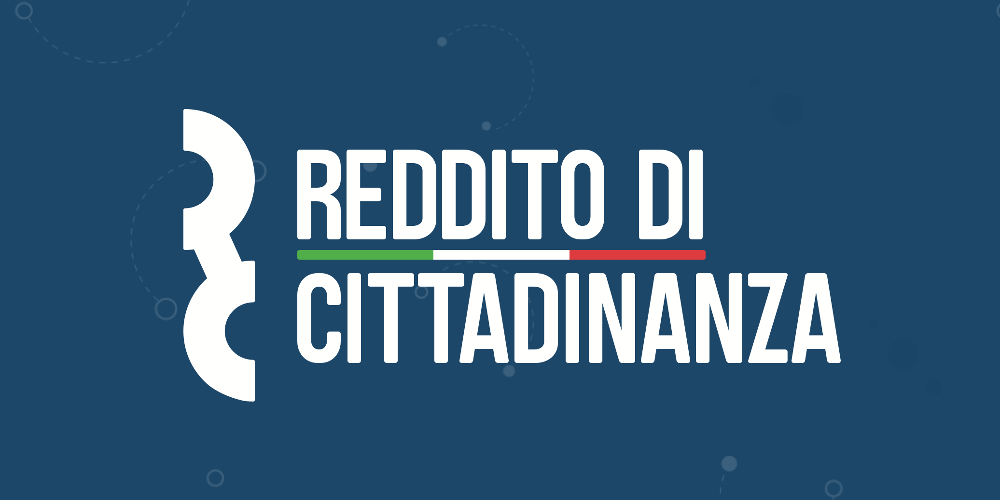

La povertà è un tema che da sempre affligge la società. L’agenda 2030 si propone di
sconfiggerla attraverso diverse fasi, da raggiungere entro il 2030:
L’eliminazione della povertà assoluta
Il dimezzamento del numero di poveri nel mondo
L’attuazione di politiche di protezione in sostegno di poveri e vulnerabili
Il Reddito di Cittadinanza, o RdC, è una misura del Governo italiano a supporto dei cittadini
meno abbienti

Obiettivo 2: Sconfiggere la fame
Come la povertà, anche la fame è un grande problema nella nostra società. Per
sconfiggerla, l’Agenda 2030 propone di:
Assicurare un’alimentazione sicura a tutti
Eliminare la malnutrizione
Raddoppiare la produttività agricola
Garantire un produzione alimentare sostenibile
Il fondo europeo di aiuto agli indigenti fornisce alimenti ai più bisognosi
Obiettivo 3: Salute e Benessere
La salute pubblica è fondamentale nel raggiungimento di uno sviluppo sostenibile. In questa direzione, l’Agenda 2030 vuole:
Ridurre la mortalità materna ed eliminare le morti infantili
Raggiungere una copertura sanitaria universale
Ridurre e porre fine ad alcune malattie trasmissibili (AIDS, tubercolosi, ecc.)
Prevenire e trattare gli abusi di sostanze
La Croce Rossa Italiana si impegna a tutelare e promuovere la salute e l’educazione a essa
Obiettivo 4: Istruzione di qualità
L’istruzione è un servizio necessario ad un paese per garantire lo sviluppo della sua popolazione. Si devono quindi, entro il 2030, rendere disponibili tutti i servizi necessari ad una istruzione dignitosa.
Uno sviluppo infantile precoce di qualità deve preparare il giovane ad affrontare la scuola primaria e secondaria. Queste ultime devono essere libere, eque ed efficaci. Sono dei diritti una corretta alfabetizzazione nonché la capacità di calcolo.
Le competenze acquisite a scuola devono preparare lo studente al mondo del lavoro.
Le strutture scolastiche devono soddisfare le esigenze di tutti e ospitare insegnanti qualificati.
In Italia il MIUR (Ministero dell’Istruzione, dell’Università e della Ricerca) è l'istituzione che gestisce l’intero sistema scolastico.
Obiettivo 5: Affermare la parità di genere
Il drastico tema della differenza di genere affligge fin dai tempi antichi le società del nostro mondo. Le donne sono ancora oggi il genere vittima di discriminazioni e pratiche nocive. Un cambiamento è necessario al fine di affermare la parità e per incentivare ciò ogni bandiera deve disporre dei mezzi necessari. I punti da tenere in considerazione sono i seguenti:
Porre fine a ogni forma di discriminazione e abolire ogni pratica nociva;
Garantire la partecipazione in tutti gli ambienti della vita;
Adottare e rafforzare politiche concrete e leggi applicabili per la promozione dell'eguaglianza di genere.
Differenza Donna è una associazione italiana che contrasta la violenza sulle donne. Nella loro mission dichiarano di impegnarsi a “rendere concreta la realità di una società nella quale ogni donna sia una persona libera, autodeterminata, valorizzata, autorevole, economicamente indipendente, ricca di dignità e saggezza: una donna, pienamente riconosciuta quale soggetto di diritti, che conosca il valore della differenza di genere e operi in solidarietà con le altre donne.”
Obiettivo 6: Acqua pulita e servizi igienico-sanitari
L’acqua è sinonimo di vita e come tale deve essere accessibile a livello universale. I paesi del mondo devono poi munirsi, entro il 2030, di adeguati servizi igienico-sanitari.
Le tappe da raggiungere sono le seguenti:
Sostenere e rafforzare la partecipazione delle comunità al fine di aumentare l'efficienza idrica e migliorare la qualità dell'acqua.
Ridurre notevolmente l'inquinamento globale.
Adottare servizi igienico-sanitari efficienti e accessibili a tutti.
L’AIAQ è una associazione italiana che si occupa della distribuzione e del trattamento dell'acqua .
Obiettivo 7: Energia pulita e accessibile
Garantire l'accesso universale ai servizi energetici a prezzi accessibili e di tipo rinnovabile.
Rafforzare la cooperazione internazionale per facilitare la ricerca di energia pulita e rinnovabile.
Promuovere gli investimenti nelle infrastrutture energetiche e nelle tecnologie per l’energia pulita.
Aggiornare le tecnologie per incentivare i servizi energetici moderni e sostenibili per tutti gli stati in via di sviluppo, in particolare per i paesi meno sviluppati, i piccoli stati, e per i paesi senza sbocco sul mare, rispettando i loro programmi di sostegno.
Sorgenia
Obiettivo 8: Lavoro dignitoso e crescita economica
Incentivare una crescita economica duratura e sostenibile, grazie a una forza lavoro piena e produttiva.
Introdurre politiche che supportino, l'imprenditorialità, la creatività e l'innovazione.
Il raggiungimento di un lavoro dignitoso e sicuro per tutti, eliminazione della schiavitù e dello sfruttamento minorile.
Attuazione di queste politiche su livello globale, incentivando i paesi in via di sviluppo.
CGIL, CISL, UIL, UGL
Obiettivo 9: Imprese, innovazione e infrastrutture
Costruire delle infrastrutture all’avanguardia e promuovere l’innovazione di un’ industria equa e sostenibile.
Favorire lo sviluppo di infrastrutture locali, con un occhio di riguardo verso i paesi in via di sviluppo e privi di sbocco sul mare.
Favorire l’ industrializzazione sostenibile.
Incoraggiare la ricerca scientifica, promuovendo le capacità offerte dallo sviluppo coinvolgendo più lavoratori possibile.
AIS
Obiettivo 10: Ridurre le disuguaglianze
Le disuguaglianze all’interno e all’esterno delle Nazioni sono un problema che affligge l’umanità sin dai tempi antichi. L’Agenda 2030 propone di:
Potenziare e promuovere l’inclusione sociale,economica e politica di tutti
Assicurare pari opportunità
Attuare il principio del trattamento speciale e differenziato per i paesi in via di sviluppo
Obiettivo 11 Città e Comunità sostenibili
Rendere le città e gli insediamenti umani inclusivi, sicuri, duraturi e sostenibili in modo da permettere alle persone di poter migliorare la propria condizione socio-economica. L’agenda 2030 propone di:
Garantire a tutti l’accesso ad alloggi adeguati e sicuri
Garantire a tutti l’accesso a un sistema di trasporti sicuro
Sostenere i paesi meno sviluppati, anche attraverso l'assistenza tecnica e finanziaria
Obiettivo 12: Consumo e produzione responsabili
La produzione sostenibile è fondamentale per il raggiungimento degli obiettivi di sviluppo sostenibile, in quanto contribuisce alla riduzione della povertà, alla tutela dell’ambiente e alla promozione della crescita economica.L’agenda 2030 propone di:
raggiungere la gestione sostenibile e l’utilizzo efficiente delle risorse naturali
ridurre in modo sostanziale la produzione di rifiuti attraverso la prevenzione, la riduzione , il riciclo e il riutilizzo
Supportare i Paesi in via di sviluppo nel potenziamento delle loro capacità scientifiche e tecnologiche, per raggiungere modelli di consumo e produzione più sostenibili
Obiettivo 13: Lotta Contro il Cambiamento Climatico
Il problema del cambiamento climatico c'è sempre stato e noi oggi stiamo scoprendo quanto sia diventato un pericolo per il pianeta, con l'innalzamento delle temperature e il conseguente scioglimento dei ghiacciai. Per arrivare a uno sviluppo sostenibile l'agenda 2030 propone:
Rafforzare in tutti i paesi la capacità di ripresa e di adattamento ai rischi legati al clima e ai disastri naturali;
Integrare le misure di cambiamento climatico nelle politiche, strategie e pianificazione nazionali per rendere effettivo l’impegno assunto dai partiti dei paesi sviluppati verso la Convenzione Quadro delle Nazioni Unite sul Cambiamento Climatico;
Migliorare l’istruzione, la sensibilizzazione e la capacità umana e istituzionale per quanto riguarda la mitigazione del cambiamento climatico, l’adattamento, la riduzione dell’impatto e l’allerta tempestiva;
Obiettivo 14: Vita Sott’Acqua
Parte della lotta al degrado ambientale riguarda la vita sottomarina. A questo riguardo, l’Agenda 2030 si impegna a:
Prevenire e ridurre l’inquinamento marino
Proteggere gli ecosistemi marini
Porre fine alla pesca eccessiva
Proteggere le zone costiere e marine
La Guardia Costiera si occupa della protezione delle acque italiane
Obiettivo 15: La Vita Sulla Terra
L'obiettivo 15 è strettamente legato al cambiamento climatico perché l’agenda 2030 propone: (e scrivere cosa propone). Entro il 2030 bisogna combattere la desertificazione, ripristinare i terreni degradati ed il suolo, compresi i terreni colpiti da desertificazione, siccità e inondazioni, e sforzarsi di realizzare un mondo senza degrado del terreno e garantire la conservazione degli ecosistemi montani, compresa la loro biodiversità, al fine di migliorare la loro capacità di fornire prestazioni che sono essenziali per lo sviluppo sostenibile.
È importante rispettare questi punti anche perché tragedie come l'incendio in Australia oppure quelli in Sardegna stanno distruggendo il pianeta.
Obiettivo 16: Pace, giustizia e istituzioni solide
Pace e Giustizia sono fondamentali per la crescita ed il benessere al fine di sconfiggere violenze, povertà, soprusi, insicurezza che devono essere affrontati in modo globale dalle istituzioni, non a caso definite nell’obiettivo solide, con l’unico intento di cooperare per la creazione di un mondo pacifico e giusto in cui vivere. Per raggiungere tale scopo l’obiettivo 16 chiede di:
ridurre tutte le forme di violenza, fermare la tortura e combattere tutte le forme di criminalità organizzata.
Inoltre, la corruzione e i flussi illegali di armi e denaro dovranno essere ridotti in modo netto.
Per raggiungere l’obiettivo di società pacifiche e inclusive, dovranno essere promossi lo Stato di diritto e il potenziamento di istituzioni partecipative e dovranno essere garantite pari opportunità nell’accesso alla giustizia.
Obiettivo 17: Partnership per gli obiettivi
Per raggiungere i 17 Obiettivi di sviluppo sostenibile è necessaria un’ampia base finanziaria, che superi i fondi messi a disposizione dall’aiuto pubblico. Infatti l’obiettivo 17 ha lo scopo di rafforzare il partenariato tra tutti i portatori di interesse nel campo dello sviluppo sostenibile. I mezzi di attuazione e le partnership possono applicarsi, dunque, a settori differenti
a livello economico-finanziario: rafforzare la mobilitazione di risorse finanziarie interne, gestire in maniera appropriata il debito estero, promuovere gli investimenti ;
a livello tecnologico: migliorare l’accesso alla scienza,alla tecnologia e all'innovazione,promuovere lo sviluppo,il trasferimento e la diffusione di tecnologie ecocompatibili nei paesi in via di sviluppo;
a livello di costruzione di competenze e capacità sostenendo i piani nazionali di sviluppo sostenibile anche attraverso la cooperazione tra nord e sud e quella triangolare;
a livello commerciale: promuovere un sistema equo di commercio internazionale, sostenere la crescita delle esportazioni dei paesi in via di sviluppo e di quelli meno sviluppati facilitandone l’accesso al mercato;
a livello sistemico: migliorare la coerenza delle politiche e gli equilibri istituzionali , rinnovare e sviluppare il partenariato globale per lo sviluppo sostenibile anche attraverso nuovi meccanismi, promuovere e sviluppare la raccolta di dati e sistemi di monitoraggio adeguati.